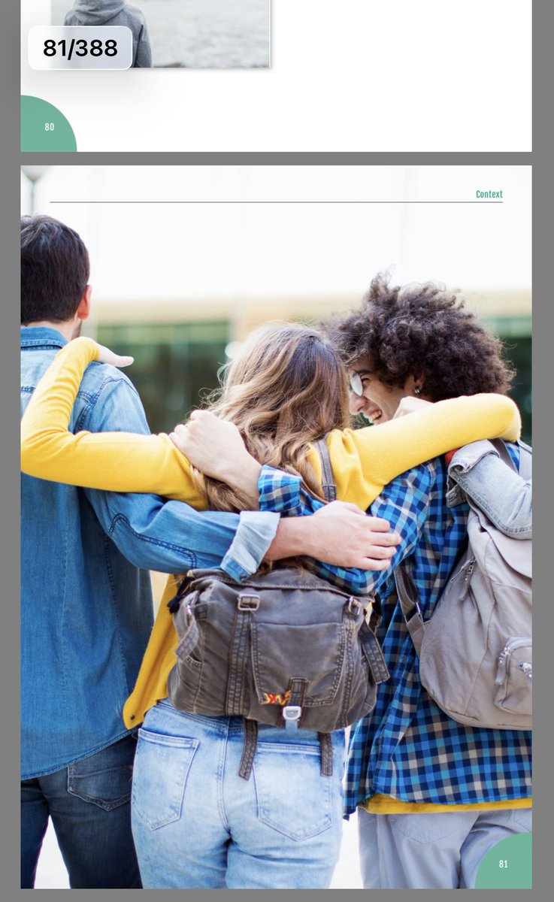
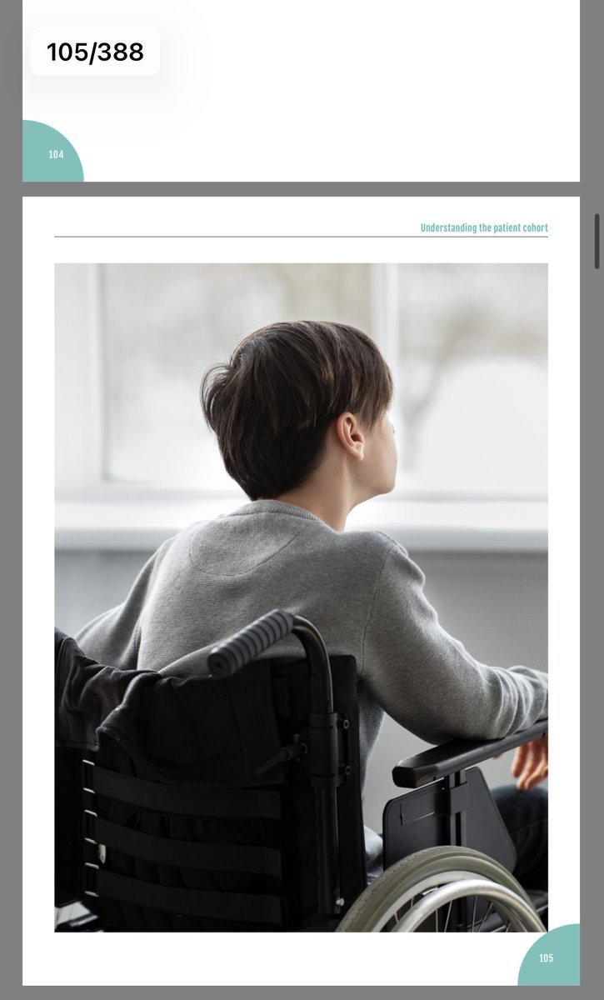
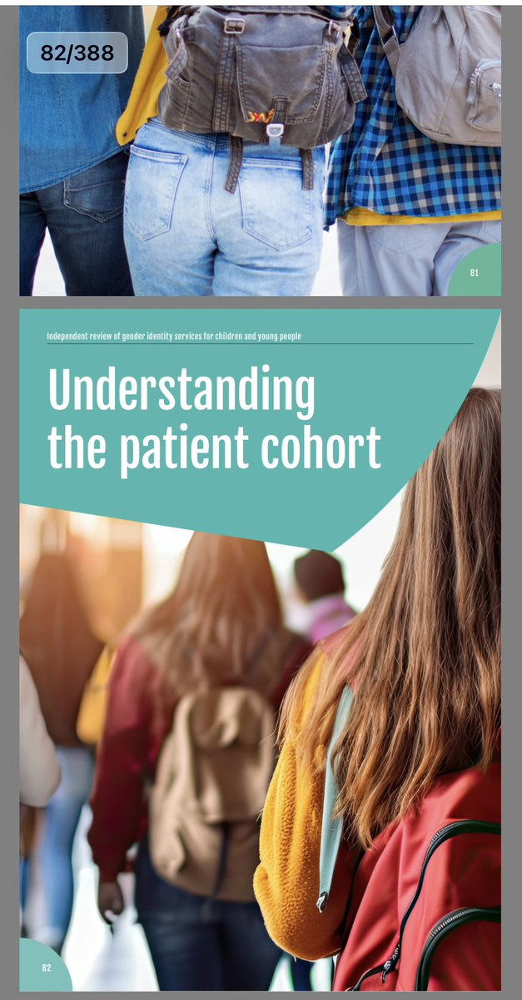

𝒂𝒎𝒃𝒆𝒓🍥
@amber_digit2
关于 Cass Review，其实 @transinacademia 专门翻译过一篇对《卡斯评论》的循证医学批判，感兴趣的可以直接在下面链接里读
https://t.co/drufWtFil1



大安/daan🏳️⚧️
@daanawa
右派政客经常将《Cass Review》描述为一份完全中立、纯粹基于证据的医学审查。
但如果翻阅报告原文，会发现它不仅是一份技术性文件，也采用了大量公共传播式的视觉叙事。 https://t.co/k7V23Y7qi7 https://t.co/CETw29TpUh